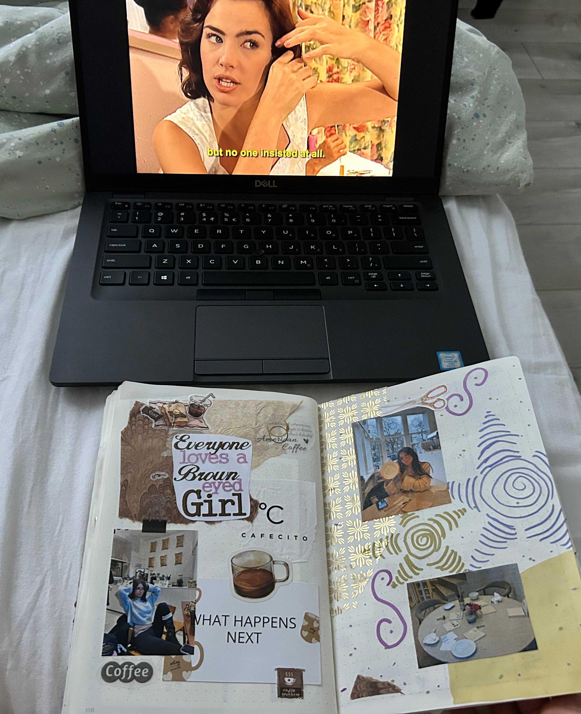
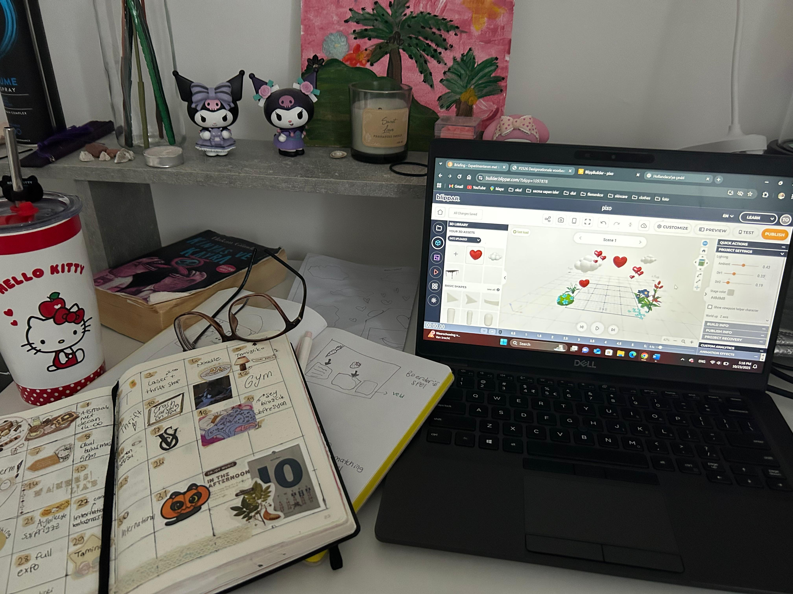
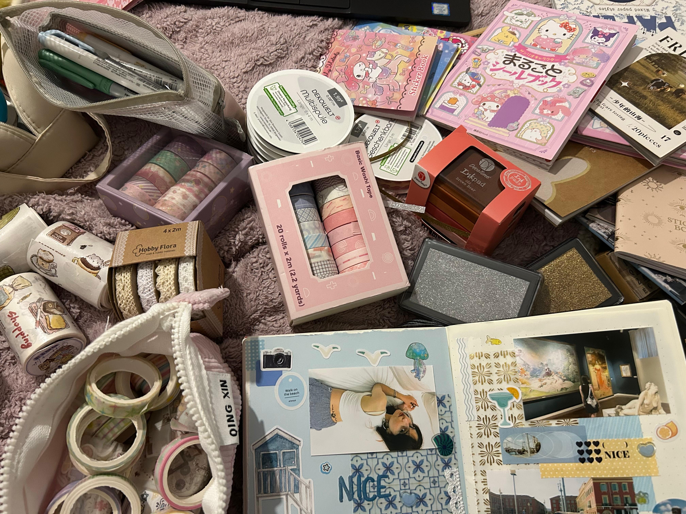
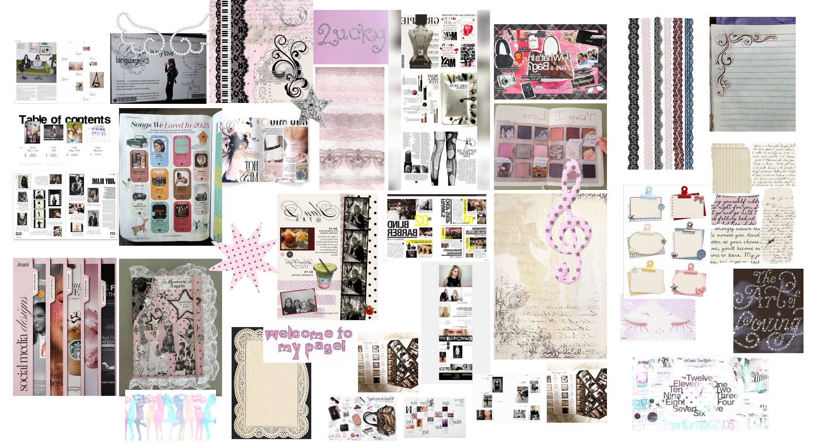
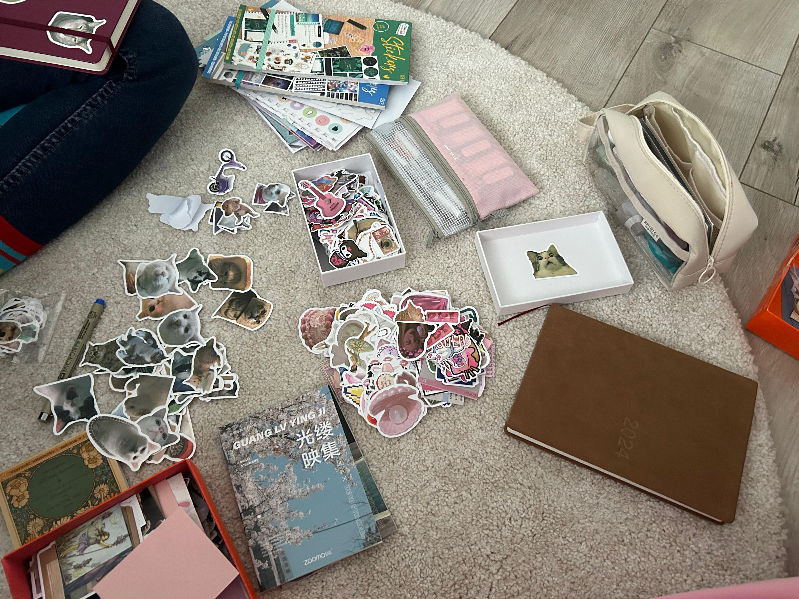

class: center, middle <!-- In deze textarea kan je in Markdown de slides aanpassen, zie https://github.com/gnab/remark/wiki voor alle mogelijkheden! --> # Tuya's Garden <p></p> --- # Introtekst Op mijn pagina wil ik delen waarom en hoe deze hobby mij rust geeft en mijn wereld groter maakt, hoe het van jongs af aan al een groot deel van mijn leven is, en dat ik hoop anderen te inspireren om er misschien ook mee te beginnen. <p></p> --- # Onderwerp Ik heb junk journaling als onderwerp gekozen omdat het een hobby is die me rust geeft. <p></p> --- # 10 links 1. https://lorigreenberg.com/what-is-junk-journaling/ - Wat is journaling? 2. https://www.kreadoe.nl/artikelen/wat-is-een-junk-journal-zelf-maken-doe-je-zo - Welke spullen heb je nodig om een junk journal te maken? 3. https://cpawsmb.org/how-to-junk-journal/ - Informatie over journaling. 4. https://www.archerandolive.com/en-nl/blogs/news/10-junk-journal-spread-ideas - Ideeen voor het vullen van een junk journal. 5. https://www.journalwithpurpose.co.uk/post/what-s-the-point-of-a-junk-journal - Wat is het nut van junk journaling? 6. https://www.margaretemiller.com/blog/8-reasons-to-love-junk-journals - De blogger heeft 8 redenen uitgelegd waarom zij junk journaling leuk vindt. 7. https://edition.cnn.com/2025/01/25/us/junk-journaling-benefits-wellness-cec - Positieve effecten van junk journaling. 8. https://craftandcherish.com/history-of-junk-journaling/ - De geschidenis van junk journaling. 9. https://houseofmahalo.com/history-of-junk-journals/ - De geschidenis van junk journaling. 10. https://journalinginsights.com/junk-journaling-techniques-art-therapy/ - Het therapeutische effect van junk journaling. --- <p></p> Meestal vind ik het leuk om een kleurpalet en vibe te kiezen en op basis daarvan een pagina te maken. --- # Mijn idee voor mijn garden Ik ben bijvoorbeeld van plan om een pagina te plaatsen die ik heb gemaakt van mijn junk journal. Daarop wil ik dan als eerste—als er een foto van mezelf is—vertellen wat ik aan het doen ben. Daarna wil ik uitleggen waar ik de gebruikte materialen vandaan heb enzovoort, en waarom ik precies die kleuren heb gekozen. Tot slot wil ik beschrijven welk gevoel die pagina me geeft. Dat is in ieder geval wat ik nu in gedachten heb. <p></p> <!-- Laat onderstaande staan anders breekt je presentatie -->